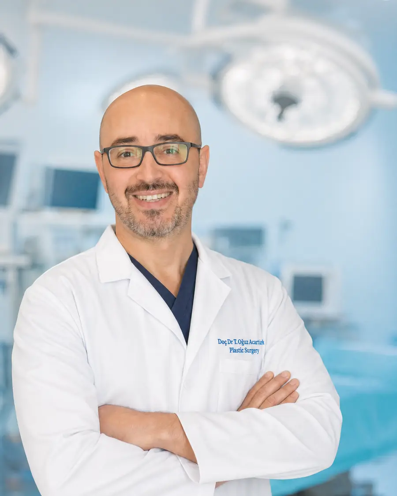

Mikrocerrahi Programı
Lipödem ve beslenme
Lipödemi ortadan kaldıran bir diyet yok. Bunu baştan söylemek gerekiyor, çünkü bu hastalıkta en çok tekrarlanan deneyim şu: yıllarca süren diyetler, düşen kilolar ve hiç değişmeyen bacaklar. Ama beslenmenin gerçek ve ölçülebilir bir katkısı var — sadece beklendiği yerde değil.
Yazan ve tıbbi olarak inceleyen: Doç. Dr. Tahsin Oğuz Acartürk — Plastik, Rekonstrüktif ve Estetik Cerrahi; Pittsburgh Üniversitesi. Son güncelleme:
Lipödem yağı neden diyete direnç gösterir?
Bu sorunun cevabı, hastaların yıllarca duydukları suçlamayı geçersiz kılar.
Vücuttaki yağ dokusu tek tip değildir. Lipödemde etkilenen dokuda hücre yapısı, damarlanma ve inflamatuar aktivite normal yağ dokusundan farklıdır. Kalori kısıtlaması vücudun genel yağ deposunu azaltır — ama bu bölgesel, hastalıklı dokuya aynı ölçüde etki etmez.
Pratikte görülen tablo şudur: hasta kilo verir, yüzü, kolları ve beli incelir, bacakları büyük ölçüde aynı kalır. Hatta orantısızlık daha belirgin hale gelebilir.
Bu, diyetin işe yaramadığı anlamına gelmez — hedefin yanlış konduğu anlamına gelir. Bacakları inceltmek beslenmenin hedefi olamaz. Ama lenfatik yükü azaltmak ve şikâyetleri hafifletmek olabilir.
Beslenmenin gerçek katkısı
- Lenfatik yükün azalması: vücut kitle indeksinin düşmesi lenfatik sistemin taşıma yükünü doğrudan hafifletir. Bu, özellikle lipo-lenfödeme ilerlemiş hastalarda önemlidir.
- Ödem hissinin azalması: aşırı tuz ve işlenmiş gıda kısıtlandığında gün içi şişkinlik hissi azalabilir
- Eklem yükünün hafiflemesi: diz ve kalça eklemlerine binen yük azalır
- Ameliyat sonucunun iyileşmesi: stabil kilo, cerrahi sonrası sonucun korunmasında belirleyicidir
- İlerlemenin yavaşlaması: kilo artışı lipödemi ağırlaştıran faktörlerden biridir
Beslenmenin katkısı gerçektir ancak dolaylıdır. Doğrudan hastalıklı dokuyu değil, o dokunun üzerindeki yükü ve çevresel koşulları iyileştirir.
Hangi beslenme yaklaşımı?
Lipödem için kanıtlanmış ve standartlaşmış tek bir diyet protokolü bulunmamaktadır. Literatürde inflamasyonu azaltmaya yönelik yaklaşımlar üzerinde durulmakla birlikte, kanıt düzeyi henüz kesin öneri yapmaya yeterli değildir.
Makul ve sürdürülebilir ilkeler
- Yeterli protein alımı — doku sağlığı ve tokluk için
- İşlenmiş gıda ve rafine şekerin azaltılması
- Aşırı tuzun sınırlanması — ödem hissini etkiler
- Yeterli su tüketimi
- Sebze ve lif ağırlıklı bir düzen
- Öğün düzeninin korunması
Kaçınılması gerekenler
- Çok düşük kalorili, uzun süreli kısıtlayıcı diyetler
- Tek besin grubuna dayanan diyetler
- "Lipödem eritir" iddiasıyla satılan takviyeler
- Hızlı sonuç vaat eden ve sürdürülemez programlar
Beslenme düzenlemesi bir diyetisyenle birlikte, kişiye özel planlanmalıdır. Bu sayfa genel bir çerçeve sunar; bireysel plan yerine geçmez.
Diyet döngüsü ve kendinize yaklaşımınız
Lipödem hastalarının çoğu yıllarca "yeterince çabalamamakla" suçlanmış, bu suçlamayı bir süre sonra kendileri de içselleştirmiştir. Tekrarlayan diyet başarısızlıkları — ki bunlar aslında başarısızlık değil, yanlış hedefin sonucudur — bu duyguyu derinleştirir.
Şunu net söylemek gerekir: bacaklarınızın diyete yanıt vermemesi iradenizle ilgili değildir. Bu, hastalığın tanımlayıcı özelliğidir. Doğru tanı konduğunda birçok hasta için en büyük rahatlama, tedaviden önce bu bilgiyi öğrenmek olur.
Yeme düzeninizle ilgili zorlanıyorsanız veya vücudunuzla ilişkiniz sizi yıpratıyorsa, bunu değerlendirmenizde paylaşmaktan çekinmeyin. Lipödem tedavisi yalnızca dokuyla ilgili değildir; bu süreç uzun yıllara yayılan bir deneyimin parçasıdır ve destek almak yerinde olur.
Sık sorulan sorular
Lipödem diyetle geçer mi?
Hayır. Hastalıklı yağ dokusu kalori kısıtlamasına direnç gösterir. Kilo verdiğinizde üst bedeniniz incelir, bacaklarınız büyük ölçüde aynı kalır. Bu, iradeyle değil hastalığın doğasıyla ilgilidir.
O halde diyetin faydası var mı?
Evet, ama dolaylı. Stabil kilo lenfatik yükü azaltır, eklem yükünü hafifletir, ödem hissini düşürür ve hastalığın ilerlemesini yavaşlatır. Ayrıca ameliyat sonucunun korunmasında belirleyicidir.
Lipödem için özel bir diyet var mı?
Kanıtlanmış ve standartlaşmış tek bir protokol yoktur. İnflamasyonu azaltmaya yönelik yaklaşımlar araştırılmaktadır ancak kanıt düzeyi kesin öneri için henüz yeterli değildir. Sürdürülebilir ve dengeli bir düzen en makul yaklaşımdır.
Ketojenik diyet lipödemde işe yarar mı?
Bazı hastalar şikâyetlerinde azalma bildirmektedir ve konu araştırılmaktadır, ancak lipödem için kesin öneri yapılmasını sağlayacak kanıt düzeyi henüz oluşmamıştır. Uygulanacaksa mutlaka hekim ve diyetisyen gözetiminde olmalıdır.
Lipödemi eriten takviyeler var mı?
Hayır. Bu iddiayla satılan ürünlerin lipödem üzerinde kanıtlanmış etkisi bulunmamaktadır. Bu ürünlere harcanan zaman, doğru tanı ve tedavinin gecikmesine yol açar.
Ameliyat sonrası diyet önemli mi?
Evet, çok. Alınan yağ dokusu geri gelmez ancak kalan dokudaki hücreler kilo alımıyla büyüyebilir. Stabil kilo, cerrahi sonucun korunmasındaki en önemli faktördür.
Doç. Dr. Tahsin Oğuz Acartürk
Plastik, Rekonstrüktif ve Estetik Cerrahi · Ağız, Yüz ve Çene Cerrahisi · Pittsburgh Üniversitesi

Bu alandaki deneyimi: Beslenmenin lipödemdeki rolünü abartmak da küçümsemek de hastaya zarar verir. Doç. Dr. Acartürk, yağ dokusu biyolojisi üzerine Pittsburgh Üniversitesi'nde araştırma yapmış bir cerrah olarak, bu dokunun neden diyete direnç gösterdiğini hastasına açıklayabilecek konumdadır.
- Pittsburgh Üniversitesi'nde yağ dokusu ve kök hücre araştırmaları
- Carnegie Mellon Üniversitesi'nde doku mühendisliği doktora sonrası çalışması
- Lipödem ve lenfödemde birleşik değerlendirme yaklaşımı
Beslenme ve tedavi planınızı konuşalım
Kilo geçmişinizi, denediğiniz diyetleri ve bacaklarınızda gözlemlediğiniz yanıtı yazın.